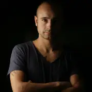

Angy Kore
Angelo del Core, led by a strong passion for techno music, approaches the world of djing and music production at the tender age of 14 years, beginning in several clubs around his province. and creating "hardstyle"tracks. From there a series of events will see Angelo (time not yet AnGy KoRe), the protagonist of a lot of club's consolles in Italy! That until the age of 19 years, when his strong desire to try new experiences, led him to embark on the most prestigious cruise ships with a role of dj. 3 years around the all world give him the way to discover different cultures of worldwide nightlife, musical tastes, new sounds_ Everything leads him to an artistic rebirth, a renewal that by way of his eclectic style,that draws an infusion of diverse hard techno, and dark minimal sound. Once back on dry land, Angelo immediately transforms his ideas into music, baptized himself with the name of AnGy KoRe_ AnGy KoRe immediately find many satisfactions finding his tracks in the playlist of djs all over the world (Richie Hawtin, Umek, Joseph Capriati, The Advent, Nicole Moudaber, Dandi & Ugo, Piatto, Ahmet Sendil, Phunk Investigation....). Consistently across the various international minimal and techno charts, AnGy KoRe becomes one of the most active and required italian dj/producer of the world!!!!
Gabriel Padrevita
Gabriel Padrevita, born in the 90s Italian Techno music producer / DJ based in Germany. His music production has many influences from 80s / 90s, but with an addition of modern elements like distorted,industrial and energetic sounds. Gabriel Padrevita started a new project with Angy Kore creating the labels Himmel and Luft where he released big part of his own music, reaching often high positions on the Techno Beatport Chart. Charisma, determination and energy are the key for his explosive dj sets!
Discografía
Label RA
- Himmel
- Luft
- BLACKWORKS
- UNLOCKEDBCN RECORDS
- NEOACID
- Falsive Records
- Opium Trax
- PURPLEART RECORDS
- RAVE ALERT
- EXE